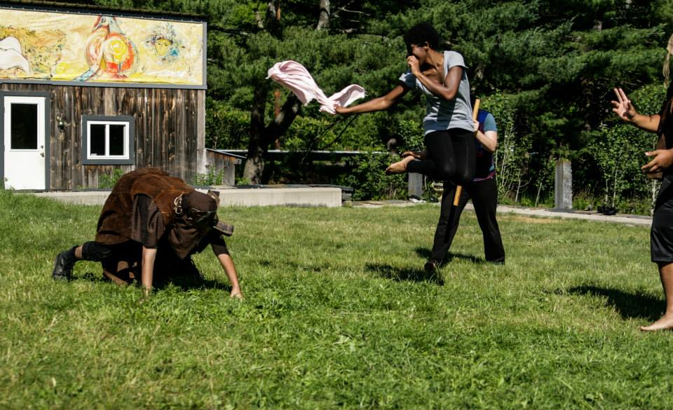

Notes on the artistic process.
 For the past two months, I've been living and breathing my art at a laboratory theatre called Double Edge Theatre in western Massachusetts. It's on a huge farm property with a few goats, a minimum of three dogs every day, lots of kale, and some of the most amazing artists I've ever had the pleasure of working with.
I came here to explore. To create. To play. Mostly to learn. This place has a creative process like nowhere else, and I'm attempting to document it as best as possible.
This is just an outline I'd like to share, purposely left broad so that it's applicable to any artistic medium. This is just a peek into my records, and I'll be sure to expand later.
1. The Proposal
The proposal is simply a starting point for expression, but it's the most important part of the whole equation.
"How high can I jump?"
"How can I best embody a bird?"
The proposal is usually shaped as a question, but a statement, image, or song can also be a catapult into the realm of discovery.
The whole point is to propose something specific and concrete, similar to a scientific hypothesis. You want something you can test/play with.
Don't worry if the proposal is necessarily related to your art. The above proposals can be applied in a theatrical setting, but what if I tried to answer them in the context of a painting or web design? Where might this experimentation lead me?
2. The Experiment
This is the fun part. This is where you take the proposal and apply it to the art. Hopefully the proposal is open enough to let you push past boundaries and boxes. If it feels like you are really stretching yourself to the limit, you will probably fall on your face and maybe even break something. That's a fine thing, because in that moment of pain or uncertainty or vulnerability you may come across something that you would never have considered. Shocking yourself is excellent!
3. The Collection
After experimentation with the proposal, you collect all the results, and sort out the usable bits. What worked? What didn't work? You don't have to answer why, or place them onto any sort of value system of "good vs bad". Maybe you took a leap somewhere amazing, or perhaps your stretched yourself in the wrong direction and it's not where you want to go. You can keep those bits for later, or toss 'em (don't do the latter too often, you never know when those weird bits will inspire you later). Write stuff down. Save your files in organized folders. Keep records of all your experiments. This is where the work will take off.
This is simply an outline of the creative process I'm working with. Sometimes it gets more complex, but it's a start for all my projects right now. Ask a question, search for answers. That's the gist of it.